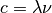
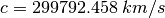

equiv – Unit Conversions¶
From the QuickTables menu, we see the following four labels for this program.
- Degrees to radians
- Radians to degrees
- Equivalent values
- Temperature
The first two are imported from hamcalc.math.trig.
Analysis¶
There are 14 entries on the equiv menu. One is a referene to the deciconv program. One is copy-and-paste from deciconv. Two are actually versions of one Solver that is the elecleng program. Nine of the remaining ten are pretty simple Equivalents conversions. The tenth has a simple Solver in it.
Capacitance
This is the conversion among the following units:
960 U$(1)="Farads..............(F)":X(1)=1 970 U$(2)="Microfarads........(µF)":X(2)=10^6 980 U$(3)="Nanofarads.........(nF)":X(3)=10^9 990 U$(4)="Picofarads.........(pF)":X(4)=10^12
Current
This is the conversion among the following units:
1170 U$(1)="Amperes.............(A)":X(1)=1 1180 U$(2)="Milliamperes.......(mA)":X(2)=10^3 1190 U$(3)="Microamperes.......(µA)":X(3)=10^6
Degrees / Minutes / Seconds
See deciconv – Decimal Hour/Degree Converter. This is copy-and-paste code that’s very similar to deciconv.
Degrees / Radians
 or
or  .
.Frequencies/Wavelengths
This is the conversion among the following units:
1260 U$(1)="hertz..............(Hz)":X(1)=1 1270 U$(2)="kilohertz.........(kHz)":X(2)=10^-3 1280 U$(3)="megahertz.........(MHz)":X(3)=10^-6 1290 U$(4)="gigahertz.........(GHz)":X(4)=10^-9 1300 U$(5)="wavelength (metres)....":X(5)=999The “999” is code for the frequency-wavelength equivalence. This is actually a piece of a Solver.

The speed of light is wavelength (km) times frequency (per second).
The constant HamCalc uses is .
Inductance
This is the conversion among the following units:
1060 U$(1)="Henrys..............(H)":X(1)=1 1070 U$(2)="Millihenrys........(mH)":X(2)=10^3 1080 U$(3)="Microhenrys........(µH)":X(3)=10^6 1090 U$(4)="Nanohenrys.........(nH)":X(4)=10^9 1100 U$(5)="Picohenrys.........(pH)":X(5)=10^12
Length / Distance
This is the conversion among the following units:
1370 U$(1)="Millimetres........(mm)":X(1)=10^3 1380 U$(2)="Centimeters........(cm)":X(2)=10^2 1390 U$(3)="Metres..............(m)":X(3)=1 1400 U$(4)="Kilometres.........(km)":X(4)=0.001 1410 U$(5)="Inches.............(in)":X(5)=39.370079 1420 U$(6)="Feet...............(ft)":X(6)=39.370079/12 1430 U$(7)="Miles..............(mi)":X(7)=39.370079/12/5280
Transmission Line Length
See elecleng.
Nothing like any of the other conversions. This is a Solver for Frequency, Length (physical), Length Electrical (“degrees”) and Velocity Factor of the line.
L: Line length in feet N: Line length, electrical, in degrees F: Frequency V: Velocity Factor


Resistance
This is the conversion among the following units:
1500 U$(1)="Ohms................(Ω)":X(1)=1 1510 U$(2)="Kilohm.............(kΩ)":X(2)=10^-3 1520 U$(3)="Megohm.............(MΩ)":X(3)=10^-6
Temperature
This is the conversion among the following units:
2420 U$(1)="Degrees Fahrenheit....." 2430 U$(2)="Degrees Celsius........"
Time
This is the conversion among the following units:
2150 U$(1)="Seconds................":X(1)=1 2160 U$(2)="Minutes................":X(2)=1/60 2170 U$(3)="Hours..................":X(3)=1/3600 2180 U$(4)="Days...................":X(4)=1/86400.0! 2190 U$(5)="Weeks..................":X(5)=1/604800.0! 2200 U$(6)="Years (365.25 days)....":X(6)=1/31557600.0#
Sexigesimal/decimal converter
Miles per imperial gallon / kilometres per litre
This is the conversion among the following units:
2950 PRINT " Is known factor (m)iles per imperial gallon or (k)ilometres "; 2960 PRINT "per litre? (m/k)" 3020 IF Z$="m"THEN A=Z:B=Z*0.354:C=100/B:D=A/1.2 3030 IF Z$="k"THEN A=Z:B=Z/0.354:C=100/A:D=B/1.2
Electrical length / Physical length
See elecleng.
This is more of the Solver shown above under Transmission Line Length.
3190 PRINT " Is known length in (d)egrees, (i)nches, or (c)entimetres? (d/i/c)" 3270 IF L$="d"THEN LD=L:LI=L*(32.8/F):LC=LI*2.54:GOTO 3300 3280 IF L$="i"THEN LI=L:LC=LI*2.54:LD=LI/(32.8/F):GOTO 3300 3290 IF L$="c"THEN LC=L:LI=LC/2.54:LD=LI/(32.8/F):GOTO 3300 3310 PRINT USING " Frequency.......... ###.### MHz";F 3320 PRINT USING " Electrical length.. ###.### deg.";LD 3330 PRINT USING " Physical length.... ###.### in.";LI 3340 PRINT USING " .... ###.### cm.";LC
Implementation¶
This gives us pause. We have three degree-radian and degree-minute-second locations.
Which is “fundamental”? Or do we have a common module that is shared by all three?
We can ignore the electical line length and sexagesimal conversions. They’re simply links to other programs.
hamcalc.math.equiv – Unit Conversions
Simple Units
- Capacitance
- Current
- Degrees / Radians (imported from hamcalc.math.trig)
- Inductance
- Length / Distance
- Resistance
- Temperature
- Time
- MPG/KPL
Plus, the Frequencies/Wavelengths is both units conversion and a Solver.
In addition to the unit definitions, there’s a variable, unit_map. This collects units into dimensions.
- ‘capacitance’: (FARAD, MICROFARAD, NANOFARAD, PICOFARAD),
- ‘current’: (AMPERE, MILLIAMPERE, MICROAMPERE),
- ‘degrees’: (DEGREE, RADIAN),
- ‘radians’: (DEGREE, RADIAN),
- ‘inductance’: (HENRY, MICROHENRY, MILLIHENRY, NANOHENRY, PICOHENRY),
- ‘length’: (METRE, CENTIMETRE, MILLIMETRE, KILOMETRE, INCH, FOOT, MILE),
- ‘distance’: (METRE, CENTIMETRE, MILLIMETRE, KILOMETRE, INCH, FOOT, MILE),
- ‘resistance’: (OHM, KILOHM, MEGOHM),
- ‘temperature’: (CELSIUS, FAHRENHEIT),
- ‘time’: (SECOND, MINUTE, HOUR, DAY, WEEK, YEAR),
- ‘mpg’: (MPGI, MPG, KPL, LPK),
- ‘kpl’: (MPGI, MPG, KPL, LPK),
- ‘frequency’: (HERTZ, KILOHERTZ, MEGAHERTZ, GIGAHERTZ),
Test Cases, Unit-by-Unit
>>> import hamcalc.math.equiv as equiv
Capacitance
>>> x= equiv.FARAD.to_std( .0000001 )
>>> equiv.MICROFARAD.from_std( x )
0.09999999999999999
>>> equiv.NANOFARAD.from_std( x )
100.0
>>> equiv.PICOFARAD.from_std( x )
100000.0
Current
>>> x= equiv.MILLIAMPERE.to_std( 150 )
>>> equiv.AMPERE.from_std( x )
0.15
>>> equiv.MICROAMPERE.from_std( x )
150000.0
Degree/Radians
>>> x= equiv.DEGREE.to_std( 30 )
>>> equiv.RADIAN.from_std( x )
0.5235987755982988
Frequency
>>> x= equiv.MEGAHERTZ.to_std( 157.100 )
>>> equiv.HERTZ.from_std( x )
157100000.0
>>> equiv.KILOHERTZ.from_std( x )
157100.0
>>> equiv.GIGAHERTZ.from_std( x )
0.15710000000000002
>>> equiv.freq_wavelength( f=157100000.0 )
{'l': 1.908290630171865, 'f': 157100000.0}
>>> equiv.freq_wavelength( l=10 )
{'l': 10, 'f': 29979245.799999997}
Inductance
>>> x=equiv.MILLIHENRY.to_std( 2 )
>>> equiv.HENRY.from_std( x )
0.002
>>> equiv.MICROHENRY.from_std( x )
2000.0
>>> equiv.NANOHENRY.from_std( x )
2000000.0
>>> equiv.PICOHENRY.from_std( x )
2000000000.0
Length/Distance
>>> x= equiv.FOOT.to_std( 6076.1155 )
>>> equiv.KILOMETRE.from_std( x )
1.8519999921768002
>>> equiv.MILE.from_std( x )
1.1507794507575757
>>> y= equiv.FOOT.to_std( 13.302 )
>>> equiv.METRE.from_std( y )
4.054449573240633
>>> equiv.CENTIMETRE.from_std( y )
405.4449573240633
>>> equiv.MILLIMETRE.from_std( y )
4054.4495732406326
Resistance
>>> x= equiv.KILOHM.to_std( 4.70 )
>>> equiv.OHM.from_std( x )
4700.0
>>> equiv.MEGOHM.from_std( x )
0.0047
Temperature
>>> x= equiv.FAHRENHEIT.to_std( 72 )
>>> equiv.CELSIUS.from_std( x )
22.22222222222222
Time
>>> x= equiv.WEEK.to_std( 3 )
>>> equiv.DAY.from_std( x )
21.0
>>> equiv.YEAR.from_std( x )
0.05749486652977412
>>> y= equiv.MINUTE.to_std( 45 )
>>> equiv.HOUR.from_std( y )
0.75
>>> equiv.SECOND.from_std( y )
2700.0
MPG
>>> x= equiv.MPGI.to_std( 12.5 )
>>> equiv.MPG.from_std( x )
10.416666666666668
>>> equiv.KPL.from_std( x )
4.425
>>> equiv.LPK.from_std( x )
35.31073446327684
VOLUME
>>> x = equiv.LITER.to_std( 4 )
>>> round(equiv.GALLON.from_std( x ),6)
1.056688
It’s possible that the legacy computes this incorrectly. The result from the legacy may be 22.6 LPK.
Legacy Quirks¶
Having multiple paths to a given program (like deciconv) is a minor quirk. It can be called good UI design to put popular things in places where people will look for them.
The “copy-and-paste” repetition of Degrees / Minutes / Seconds is quirky.
The presence of the electrical line length solver in this program – in two places – seems silly, since there’s a separate program that appears to do this. See elecleng.